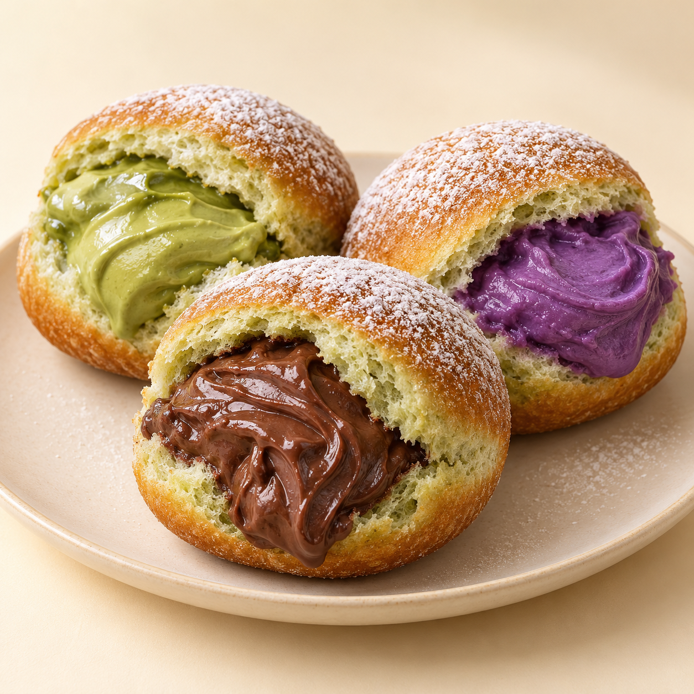

SMALL BITES, BIG HAPPY
Satu gigitan.
Langsung happy.
Bomboloni lembut dengan adonan bayam dan filling creamy. Teman manis buat jeda di antara kesibukanmu.

your sweet break soft outside.
creamy inside.
Lagi pengen makan cemilan yang ada kandungan sayurnya?
KENALAN DULU, YUK
Familiar rasanya.
Unik ceritanya.
BomboBites berangkat dari ide sederhana: bikin camilan yang familiar jadi lebih menarik. Kami memilih adonan bayam sebagai identitas, lalu memadukannya dengan tiga filling yang punya karakter masing-masing.
Cocok buat teman ngobrol, jeda belajar, atau camilan bareng teman. Kamu bisa pilih satu rasa, atau coba ketiganya.
Adonan bayam
Pembeda di balik setiap gigitan.
Filling yang creamy
Choco, matcha, dan ubi ungu.
Buat nemenin waktu santaimu
Manisnya pas untuk dinikmati bareng.
YOUR NEXT SWEET BREAK
Pilih isian
favoritmu!
Tiga langkah kecil buat pesan BomboBites.
- 01
Pilih rasa
Lihat trio rasa kami dan tentukan favoritmu.
- 02
Isi form pre-order
Isi nama, nomor WhatsApp, serta pesanan dengan format Choco x 1 atau nama rasa lain x jumlah.
- 03
Bayar & ambil pesanan
Bayar lewat QRIS di form dan unggah bukti pembayaran. Ambil pesanan pada 15 Oktober 2026 di FASILKOM.
Sudah ketemu favoritmu?
PO ditutup 14 Oktober 2026. Pengambilan 15 Oktober 2026 di FASILKOM.
SEBELUM PESAN
Biar makin kenal.
Apa yang bikin BomboBites berbeda?
Adonan bayam menjadi identitas BomboBites, dengan pilihan filling matcha, choco, dan ubi ungu. Kami menonjolkan tekstur lembut dan filling creamy.
Kapan pre-order ditutup?
Pre-order sudah dibuka dan ditutup pada 14 Oktober 2026. Pesanan diambil pada 15 Oktober 2026 di FASILKOM.
Bisa pilih campuran rasa?
Kami menyiapkan konsep pilihan satuan dan campuran tiga rasa. Paket yang benar-benar tersedia akan tercantum di form saat pre-order dibuka.
Bagaimana jadwal dan pengambilannya?
Pengambilan pesanan pada 15 Oktober 2026 di FASILKOM. Pembayaran lewat QRIS yang tersedia di form; unggah bukti pembayaran sebelum mengirim pesanan.